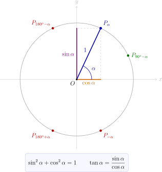
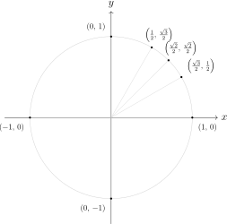

Hoofdstuk 2Basisformules

Leerplandoelstellingen (GO! Navigator)
Gevorderde wiskunde (WD3_06.08)
-
• WD3_06.08.22 (MD 06.08.23) De leerlingen gebruiken goniometrische formules om uitdrukkingen te vereenvoudigen.
-
– afbakening: formules: som- en verschilformules, verdubbelingsformules
-
Didactische uitwerking: de goniometrische cirkel als drager van de goniometrische getallen, sinus, cosinus, tangens en cotangens van een georiënteerde hoek, de grondformule en de verbanden tussen de vier goniometrische getallen, de goniometrische getallen van de bijzondere hoeken, en de formules voor verwante hoeken: gelijke, tegengestelde, complementaire, supplementaire en antisupplementaire hoeken.
I Goniometrische cirkel
II Goniometrische getallen
III Basisformules
\[ \begin {aligned} \cos ^2\alpha +\sin ^2\alpha &= 1 & \text {(grondformule)}\\[0.2em] \tan \alpha &= \frac {\sin \alpha }{\cos \alpha } &\qquad \cot \alpha &= \frac {\cos
\alpha }{\sin \alpha }\\ \tan \alpha &= \frac {1}{\cot \alpha } & \cot \alpha &= \frac {1}{\tan \alpha }\\ \sec \alpha &= \frac {1}{\cos \alpha } & \csc \alpha &= \frac
{1}{\sin \alpha }\\[0.2em] 1+\tan ^2\alpha &= \frac {1}{\cos ^2\alpha } & 1+\cot ^2\alpha &= \frac {1}{\sin ^2\alpha } \end {aligned} \]
IV Enkele bijzondere hoeken
1 Tabel
| \(\alpha \) | \(\begin {array}{c}0\\[2pt]{\small \color {gray}0\degree }\end {array}\) | \(\begin {array}{c}\dfrac {\pi }{6}\\[2pt]{\small \color {gray}30\degree }\end {array}\) | \(\begin {array}{c}\dfrac {\pi }{4}\\[2pt]{\small \color {gray}45\degree }\end {array}\) | \(\begin {array}{c}\dfrac {\pi }{3}\\[2pt]{\small \color {gray}60\degree }\end {array}\) | \(\begin {array}{c}\dfrac {\pi }{2}\\[2pt]{\small \color {gray}90\degree }\end {array}\) | \(\begin {array}{c}\pi \\[2pt]{\small \color {gray}180\degree }\end {array}\) | \(\begin {array}{c}\dfrac {3\pi }{2}\\[2pt]{\small \color {gray}270\degree }\end {array}\) | \(\begin {array}{c}2\pi \\[2pt]{\small \color {gray}360\degree }\end {array}\) |
| \(\sin \alpha \) | \(0\) | \(\tfrac 12\) | \(\tfrac {\sqrt 2}{2}\) | \(\tfrac {\sqrt 3}{2}\) | \(1\) | \(0\) | \(-1\) | \(0\) |
| \(\cos \alpha \) | \(1\) | \(\tfrac {\sqrt 3}{2}\) | \(\tfrac {\sqrt 2}{2}\) | \(\tfrac 12\) | \(0\) | \(-1\) | \(0\) | \(1\) |
| \(\tan \alpha \) | \(0\) | \(\tfrac {\sqrt 3}{3}\) | \(1\) | \(\sqrt 3\) | \(\notin \mathbb {R}\) | \(0\) | \(\notin \mathbb {R}\) | \(0\) |
| \(\cot \alpha \) | \(\notin \mathbb {R}\) | \(\sqrt 3\) | \(1\) | \(\tfrac {\sqrt 3}{3}\) | \(0\) | \(\notin \mathbb {R}\) | \(0\) | \(\notin \mathbb {R}\) |
2 Grafisch

V Verwante hoeken
1 Gelijke hoeken
\[ \alpha -\beta =k\cdot 2\pi \;\Rightarrow \; \beta =\alpha +k\cdot 2\pi \qquad (k\in \mathbb {Z}) \qquad {\small \color {gray}(2\pi =360\degree )} \]
Opmerking
Voor \(\tan \) en \(\cot \) geldt er meer: die hebben periode \(\pi \) in plaats van \(2\pi \). Twee hoeken die \(\pi \) verschillen, liggen immers op dezelfde rechte door de oorsprong, en die rechte snijdt de raaklijn \(x=1\) in één enkel punt.
2 Tegengestelde hoeken
\[ \alpha +\beta =0 \text { of } 2\pi \;\Rightarrow \; \beta =-\alpha \qquad {\small \color {gray}(2\pi =360\degree )} \]
3 Complementaire hoeken
\[ \alpha +\beta =\frac {\pi }{2} \;\Rightarrow \; \beta =\frac {\pi }{2}-\alpha \qquad {\small \color {gray}\left (\tfrac {\pi }{2}=90\degree \right )} \]
4 Supplementaire hoeken
\[ \alpha +\beta =\pi \;\Rightarrow \; \beta =\pi -\alpha \qquad {\small \color {gray}(\pi =180\degree )} \]
5 Antisupplementaire hoeken
\[ \beta -\alpha =\pi \;\Rightarrow \; \beta =\alpha +\pi \qquad {\small \color {gray}(\pi =180\degree )} \]
VI Oefeningen
Oefening 1
Gegeven dat de volgende vormen zinvol zijn. Vereenvoudig:
-
(a) \(\cos \alpha \cdot \tan \alpha \)
-
(b) \(\sin ^2 \alpha - 1\)
-
(c) \(\dfrac {\sin \alpha }{\tan \alpha }\)
-
(d) \(\dfrac {\cos \alpha }{\cot \alpha }\)
-
(a)
\(\seteqnumber{0}{}{0}\)\begin{align*} \cos \alpha \cdot \tan \alpha &= \cos \alpha \cdot \frac {\sin \alpha }{\cos \alpha }\\ &= \sin \alpha \end{align*}
-
(b)
\(\seteqnumber{0}{}{0}\)\begin{align*} \sin ^2\alpha - 1 &= \sin ^2\alpha - \left (\cos ^2\alpha + \sin ^2\alpha \right )\\ &= \sin ^2\alpha - \cos ^2\alpha - \sin ^2\alpha \\ &= -\cos ^2\alpha \end{align*}
-
(c)
\(\seteqnumber{0}{}{0}\)\begin{align*} \frac {\sin \alpha }{\tan \alpha } &= \frac {\sin \alpha }{\dfrac {\sin \alpha }{\cos \alpha }}\\ &= \sin \alpha \cdot \frac {\cos \alpha }{\sin \alpha }\\ &= \cos \alpha \end{align*}
-
(d)
\(\seteqnumber{0}{}{0}\)\begin{align*} \frac {\cos \alpha }{\cot \alpha } &= \frac {\cos \alpha }{\dfrac {\cos \alpha }{\sin \alpha }}\\ &= \cos \alpha \cdot \frac {\sin \alpha }{\cos \alpha }\\ &= \sin \alpha \end{align*}
Oefening 2
Bewijs de volgende identiteiten voor elke \(\alpha \) waarvoor beide leden zinvol zijn:
-
(a) \(\cos \alpha - \cos ^3 \alpha = \cos \alpha \cdot \sin ^2 \alpha \)
-
(b) \((\sin \alpha + \cos \alpha )^2 = 1 + 2 \sin \alpha \cdot \cos \alpha \)
-
(a) Te bewijzen: \(\cos \alpha - \cos ^3\alpha = \cos \alpha \cdot \sin ^2\alpha \).
\(\seteqnumber{0}{}{0}\)\begin{align*} &\Leftrightarrow & \cos \alpha &= \cos \alpha \cdot \sin ^2\alpha + \cos ^3\alpha \\ &\Leftrightarrow & \cos \alpha &= \cos \alpha \cdot \sin ^2\alpha + \cos \alpha \cdot \cos ^2\alpha \\ &\Leftrightarrow & \cos \alpha &= \cos \alpha \left (\sin ^2\alpha + \cos ^2\alpha \right )\\ &\Leftrightarrow & \cos \alpha &= \cos \alpha \cdot 1\qquad \square \end{align*}
-
(b) Te bewijzen: \((\sin \alpha + \cos \alpha )^2 = 1 + 2\sin \alpha \cos \alpha \).
\(\seteqnumber{0}{}{0}\)\begin{align*} LL &= \left (\sin \alpha + \cos \alpha \right )^2\\ &= \sin ^2\alpha + 2\sin \alpha \cos \alpha + \cos ^2\alpha \\ &= \sin ^2\alpha + \cos ^2\alpha + 2\sin \alpha \cos \alpha \\ &\overset {\text {grondf.}}{=} 1 + 2\sin \alpha \cos \alpha \\ &= RL \qquad \square \end{align*}
Oefening 3
Bewijs de volgende identiteiten voor elke \(\alpha \) en \(\beta \) waarvoor beide leden zinvol zijn:
-
(a) \(\sin ^2 \alpha - \sin ^2\beta = \cos ^2 \beta - \cos ^2 \alpha \)
-
(b) \(\sin ^2 \alpha \cdot \cos ^2 \beta - \cos ^2 \alpha \cdot \sin ^2 \beta = \sin ^2 \alpha - \sin ^2 \beta \)
-
(a)
\(\seteqnumber{0}{}{0}\)\begin{align*} && \sin ^2\alpha - \sin ^2\beta &= \cos ^2\beta - \cos ^2\alpha \\ &\Leftrightarrow & \sin ^2\alpha + \cos ^2\alpha &= \cos ^2\beta + \sin ^2\beta \\ &\Leftrightarrow & 1 &= 1 \qquad \square \end{align*}
-
(b) We brengen \(\cos ^2\alpha \sin ^2\beta \) naar rechts en \(\sin ^2\alpha \) naar links:
\(\seteqnumber{0}{}{0}\)\begin{align*} && \sin ^2\alpha \cos ^2\beta - \cos ^2\alpha \sin ^2\beta &= \sin ^2\alpha - \sin ^2\beta \\ &\Leftrightarrow & \sin ^2\alpha \cos ^2\beta - \sin ^2\alpha &= \cos ^2\alpha \sin ^2\beta - \sin ^2\beta \\ &\Leftrightarrow & \sin ^2\alpha \left (\cos ^2\beta - 1\right ) &= \left (\cos ^2\alpha - 1\right )\sin ^2\beta \end{align*} Uit de grondformule volgt namelijk
\(\seteqnumber{0}{}{0}\)\begin{align*} && \cos ^2\theta + \sin ^2\theta &= 1\\ &\Leftrightarrow & \sin ^2\theta &= 1 - \cos ^2\theta \\ &\Leftrightarrow & -\sin ^2\theta &= -\left (1 - \cos ^2\theta \right )\\ &\Leftrightarrow & -\sin ^2\theta &= -1 + \cos ^2\theta \\ &\Leftrightarrow & -\sin ^2\theta &= \cos ^2\theta - 1 \end{align*} en dus
\(\seteqnumber{0}{}{0}\)\begin{align*} &\Leftrightarrow & \sin ^2\alpha \cdot \left (-\sin ^2\beta \right ) &= -\sin ^2\alpha \cdot \sin ^2\beta \qquad \square \end{align*}
Oefening 4
Gegeven dat de volgende vormen zinvol zijn. Schrijf zo eenvoudig mogelijk:
-
(a) \(\tan ^2 \alpha - \dfrac {\sec ^2 \alpha }{\csc ^2 \alpha }\)
-
(b) \(\dfrac {1}{\sec ^2 \alpha } + \dfrac {1}{\csc ^2 \alpha }\)
-
(c) \(\left (1 + \cot \alpha - \csc \alpha \right )\left (1 + \tan \alpha + \sec \alpha \right )\)
-
(d) \(\left (\sin \alpha \cdot \cos \beta + \cos \alpha \cdot \sin \beta \right )^2 + \left (\cos \alpha \cdot \cos \beta - \sin \alpha \cdot \sin \beta \right )^2\)
-
(a)
\(\seteqnumber{0}{}{0}\)\begin{align*} \tan ^2\alpha - \frac {\sec ^2\alpha }{\csc ^2\alpha } &= \tan ^2\alpha - \frac {\dfrac {1}{\cos ^2\alpha }}{\dfrac {1}{\sin ^2\alpha }}\\ &= \frac {\sin ^2\alpha }{\cos ^2\alpha } - \frac {\sin ^2\alpha }{\cos ^2\alpha }\\ &= 0 \end{align*}
-
(b)
\(\seteqnumber{0}{}{0}\)\begin{align*} \frac {1}{\sec ^2\alpha } + \frac {1}{\csc ^2\alpha } &= \cos ^2\alpha + \sin ^2\alpha \\ &= 1 \end{align*}
-
(c)
\(\seteqnumber{0}{}{0}\)\begin{align*} &\left (1 + \cot \alpha - \csc \alpha \right )\left (1 + \tan \alpha + \sec \alpha \right )\\ &= \left (1 + \frac {\cos \alpha }{\sin \alpha } - \frac {1}{\sin \alpha }\right ) \left (1 + \frac {\sin \alpha }{\cos \alpha } + \frac {1}{\cos \alpha }\right )\\ &= \frac {\sin \alpha + \cos \alpha - 1}{\sin \alpha }\cdot \frac {\cos \alpha + \sin \alpha + 1}{\cos \alpha }\\ &= \frac {\left (\sin \alpha + \cos \alpha - 1\right )\left (\cos \alpha + \sin \alpha + 1\right )}{\sin \alpha \cos \alpha }\\ &\overset {\text {MPII}}{=} \frac {\left (\sin \alpha + \cos \alpha \right )^2 - 1}{\sin \alpha \cos \alpha }\\ &\overset {\text {MPI}}{=} \frac {\sin ^2\alpha + 2\sin \alpha \cos \alpha + \cos ^2\alpha - 1}{\sin \alpha \cos \alpha }\\ &= \frac {\sin \alpha \cos \alpha + \left (\sin ^2\alpha + \cos ^2\alpha \right ) + \sin \alpha \cos \alpha - 1}{\sin \alpha \cos \alpha }\\ &= \frac {2\sin \alpha \cos \alpha }{\sin \alpha \cos \alpha }\\ &= 2 \end{align*}
-
(d) We werken de merkwaardige producten uit:
\(\seteqnumber{0}{}{0}\)\begin{align*} &\left (\sin \alpha \cos \beta + \cos \alpha \sin \beta \right )^2 + \left (\cos \alpha \cos \beta - \sin \alpha \sin \beta \right )^2\\ &= \sin ^2\alpha \cos ^2\beta + \cancel {2\sin \alpha \cos \beta \cos \alpha \sin \beta } + \cos ^2\alpha \sin ^2\beta \\ &\quad + \cos ^2\alpha \cos ^2\beta - \cancel {2\cos \alpha \cos \beta \sin \alpha \sin \beta } + \sin ^2\alpha \sin ^2\beta \\ &= \sin ^2\alpha \cos ^2\beta + \cos ^2\alpha \cos ^2\beta + \cos ^2\alpha \sin ^2\beta + \sin ^2\alpha \sin ^2\beta \\ &= \cos ^2\beta \left (\sin ^2\alpha + \cos ^2\alpha \right ) + \sin ^2\beta \left (\cos ^2\alpha + \sin ^2\alpha \right )\\ &\overset {\text {grondf.}}{=} \cos ^2\beta + \sin ^2\beta \\ &\overset {\text {grondf.}}{=} 1 \end{align*} Opmerking: in het volgende hoofdstuk zullen we extra formules zien. Maak deze oefening dan nog eens opnieuw, ze is dan op te lossen in 2 stappen!
Oefening 5
Gegeven dat de volgende vormen zinvol zijn. Herschrijf eenvoudiger:
-
(a) \(\left (3 \cdot \sin \alpha + 2 \cdot \cos \alpha \right )^2 + \left (3 \cdot \sin \alpha - 2 \cdot \cos \alpha \right )^2\)
-
(b) \(\dfrac {1 + \sec ^2 \alpha + \cot ^2 \alpha }{\cot ^2 \alpha }\)
-
(c) \(\dfrac {\cos \alpha \cdot \tan \alpha \cdot \csc \alpha + 1}{\csc \alpha }\)
-
(d) \(\dfrac {1}{\csc \alpha - 1} - \dfrac {1}{\csc \alpha + 1}\)
-
(e) \(\dfrac {\sin \alpha }{1 + \cos \alpha } + \dfrac {1 + \cos \alpha }{\sin \alpha }\)
-
(a) Voor elke \(A\) en \(B\) geldt
\[ (A+B)^2 + (A-B)^2 = A^2 + 2AB + B^2 + A^2 - 2AB + B^2 = 2A^2 + 2B^2, \]
dus
\(\seteqnumber{0}{}{0}\)\begin{align*} \left (3\sin \alpha + 2\cos \alpha \right )^2 + \left (3\sin \alpha - 2\cos \alpha \right )^2 &= 2\left (3\sin \alpha \right )^2 + 2\left (2\cos \alpha \right )^2\\ &= 2\cdot 9\sin ^2\alpha + 2\cdot 4\cos ^2\alpha \\ &= 18\sin ^2\alpha + 8\cos ^2\alpha \\ &= 10\sin ^2\alpha + 8\sin ^2\alpha + 8\cos ^2\alpha \\ &= 10\sin ^2\alpha + 8\left (\sin ^2\alpha + \cos ^2\alpha \right )\\ &= 10\sin ^2\alpha + 8 \end{align*}
-
(b) Merk eerst op dat
\[ \frac {1}{\cot ^2\alpha } = \tan ^2\alpha = \frac {\sin ^2\alpha }{\cos ^2\alpha } \qquad \text {en}\qquad \frac {\sec ^2\alpha }{\cot ^2\alpha } = \frac {\dfrac {1}{\cos ^2\alpha }}{\dfrac {\cos ^2\alpha }{\sin ^2\alpha }} = \frac {1}{\cos ^2\alpha }\cdot \frac {\sin ^2\alpha }{\cos ^2\alpha } = \frac {\sin ^2\alpha }{\cos ^4\alpha }. \]
Daarmee wordt
\(\seteqnumber{0}{}{0}\)\begin{align*} \frac {1 + \sec ^2\alpha + \cot ^2\alpha }{\cot ^2\alpha } &= \frac {1}{\cot ^2\alpha } + \frac {\sec ^2\alpha }{\cot ^2\alpha } + \frac {\cot ^2\alpha }{\cot ^2\alpha }\\ &= \frac {\sin ^2\alpha }{\cos ^2\alpha } + \frac {\sin ^2\alpha }{\cos ^4\alpha } + 1\\ &= \frac {\sin ^2\alpha \cos ^2\alpha + \sin ^2\alpha + \cos ^4\alpha }{\cos ^4\alpha } &&(\cos ^2\alpha \ \text {vooropzetten})\\ &= \frac {\cos ^2\alpha \left (\sin ^2\alpha + \cos ^2\alpha \right ) + \sin ^2\alpha }{\cos ^4\alpha }\\ &= \frac {\cos ^2\alpha + \sin ^2\alpha }{\cos ^4\alpha }\\ &= \frac {1}{\cos ^4\alpha } \end{align*}
-
(c) Er geldt \(\dfrac {1}{\csc \alpha } = \dfrac {1}{\dfrac {1}{\sin \alpha }} = 1\cdot \sin \alpha = \sin \alpha \), dus
\(\seteqnumber{0}{}{0}\)\begin{align*} \frac {\cos \alpha \tan \alpha \csc \alpha + 1}{\csc \alpha } &= \sin \alpha \left (\cos \alpha \cdot \frac {\sin \alpha }{\cos \alpha }\cdot \frac {1}{\sin \alpha } + 1\right )\\ &= \sin \alpha \left (1 + 1\right )\\ &= 2\sin \alpha \end{align*}
-
(d) Er staan te veel breuken: we vermenigvuldigen teller en noemer van elke breuk met \(\sin \alpha \). In de noemer herkennen we daarna MP I.
\(\seteqnumber{0}{}{0}\)\begin{align*} \frac {1}{\csc \alpha - 1} - \frac {1}{\csc \alpha + 1} &= \frac {1}{\dfrac {1}{\sin \alpha } - 1} - \frac {1}{\dfrac {1}{\sin \alpha } + 1}\\ &= \frac {\sin \alpha }{1 - \sin \alpha } - \frac {\sin \alpha }{1 + \sin \alpha }\\ &= \frac {\sin \alpha \left (1 + \sin \alpha \right )}{\left (1 - \sin \alpha \right )\left (1 + \sin \alpha \right )} - \frac {\sin \alpha \left (1 - \sin \alpha \right )}{\left (1 + \sin \alpha \right )\left (1 - \sin \alpha \right )}\\ &= \frac {\sin \alpha \left (1 + \sin \alpha \right ) - \sin \alpha \left (1 - \sin \alpha \right )} {\left (1 - \sin \alpha \right )\left (1 + \sin \alpha \right )}\\ &= \frac {\sin \alpha \left (\left (1 + \sin \alpha \right ) - \left (1 - \sin \alpha \right )\right )}{1 - \sin ^2\alpha }\\ &= \frac {\sin \alpha \left (1 + \sin \alpha - 1 + \sin \alpha \right )}{\cos ^2\alpha }\\ &= \frac {\sin \alpha \cdot 2\sin \alpha }{\cos ^2\alpha }\\ &= 2\,\frac {\sin ^2\alpha }{\cos ^2\alpha }\\ &= 2\tan ^2\alpha \end{align*}
-
(e)
\(\seteqnumber{0}{}{0}\)\begin{align*} \frac {\sin \alpha }{1 + \cos \alpha } + \frac {1 + \cos \alpha }{\sin \alpha } &= \frac {\sin \alpha \cdot \sin \alpha }{\left (1 + \cos \alpha \right )\sin \alpha } + \frac {\left (1 + \cos \alpha \right )\left (1 + \cos \alpha \right )}{\sin \alpha \left (1 + \cos \alpha \right )}\\ &= \frac {\sin ^2\alpha }{\sin \alpha + \cos \alpha \sin \alpha } + \frac {1 + 2\cos \alpha + \cos ^2\alpha }{\sin \alpha + \cos \alpha \sin \alpha }\\ &= \frac {\sin ^2\alpha + 1 + 2\cos \alpha + \cos ^2\alpha }{\sin \alpha + \cos \alpha \sin \alpha }\\ &= \frac {\sin ^2\alpha + \cos ^2\alpha + 1 + 2\cos \alpha }{\sin \alpha \left (1 + \cos \alpha \right )}\\ &= \frac {1 + 1 + 2\cos \alpha }{\sin \alpha \left (1 + \cos \alpha \right )}\\ &= \frac {2 + 2\cos \alpha }{\sin \alpha \left (1 + \cos \alpha \right )}\\ &= \frac {2\left (1 + \cos \alpha \right )}{\sin \alpha \left (1 + \cos \alpha \right )}\\ &= \frac {2}{\sin \alpha }\\ &= 2\csc \alpha \end{align*}
Oefening 6
Bewijs de volgende identiteiten voor elke \(\alpha \) waarvoor beide leden zinvol zijn:
-
(a) \(\dfrac {\sin ^3 \alpha + \cos ^3 \alpha }{\sin \alpha + \cos \alpha } = 1 - \sin \alpha \cos \alpha \)
-
(b) \(\dfrac {\tan \alpha }{\sin \alpha } + \dfrac {\cot \alpha }{\cos \alpha } = \dfrac {\sin \alpha + \cos \alpha }{\sin \alpha \cos \alpha }\)
-
(c) \(\dfrac {\sin \alpha + \cos \alpha }{\sin \alpha - \cos \alpha } = \dfrac {1 + \cot \alpha }{1 - \cot \alpha }\)
-
(d) \(\left ( \tan \alpha + \cot \alpha \right )^2 - 2 = \left ( \tan \alpha - \cot \alpha \right )^2 + 2\)
-
(e) \(\sin ^6 \alpha + \cos ^6 \alpha = 2 \sin ^4 \alpha + \cos ^4 \alpha - \sin ^2 \alpha \)
-
(f) \(\dfrac {\tan ^3 \alpha }{1 + \tan ^2 \alpha } + \dfrac {\cot ^3 \alpha }{1 + \cot ^2 \alpha } = \dfrac {1 - 2 \sin ^2 \alpha \cos ^2 \alpha }{\sin \alpha \cos \alpha }\)
-
(g) \(\dfrac {\sin \alpha + \cos \alpha }{\sin \alpha - \cos \alpha } + \dfrac {\sin \alpha - \cos \alpha }{\sin \alpha + \cos \alpha } = \dfrac {1}{0.5 - \cos ^2 \alpha }\)
-
(h) \(\sin ^4 \alpha - \cos ^4 \alpha = \sin ^2 \alpha - \cos ^2 \alpha \)
-
(a)
\(\seteqnumber{0}{}{0}\)\begin{align*} && \frac {\sin ^3\alpha + \cos ^3\alpha }{\sin \alpha + \cos \alpha } &= 1 - \sin \alpha \cos \alpha \\ &\Leftrightarrow & \sin ^3\alpha + \cos ^3\alpha &= \left (1 - \sin \alpha \cos \alpha \right )\left (\sin \alpha + \cos \alpha \right )\\ &\Leftrightarrow & \sin ^3\alpha + \cos ^3\alpha &= \sin \alpha - \sin ^2\alpha \cos \alpha + \cos \alpha - \sin \alpha \cos ^2\alpha \\ &\Leftrightarrow & \sin ^3\alpha + \cos ^3\alpha &= \sin \alpha \left (1 - \cos ^2\alpha \right ) + \cos \alpha \left (1 - \sin ^2\alpha \right )\\ &\Leftrightarrow & \sin ^3\alpha + \cos ^3\alpha &= \sin ^3\alpha + \cos ^3\alpha \qquad \square \end{align*}
-
(b) We vermenigvuldigen linker- en rechterlid met \(\sin \alpha \cos \alpha \):
\(\seteqnumber{0}{}{0}\)\begin{align*} && \frac {\tan \alpha }{\sin \alpha } + \frac {\cot \alpha }{\cos \alpha } &= \frac {\sin \alpha + \cos \alpha }{\sin \alpha \cos \alpha }\\ &\Leftrightarrow & \tan \alpha \cos \alpha + \cot \alpha \sin \alpha &= \sin \alpha + \cos \alpha \\ &\Leftrightarrow & \frac {\sin \alpha }{\cos \alpha }\cos \alpha + \frac {\cos \alpha }{\sin \alpha }\sin \alpha &= \sin \alpha + \cos \alpha \\ &\Leftrightarrow & \sin \alpha + \cos \alpha &= \sin \alpha + \cos \alpha \qquad \square \end{align*}
-
(c) We delen teller en noemer door \(\sin \alpha \):
\(\seteqnumber{0}{}{0}\)\begin{align*} LL &= \frac {\sin \alpha + \cos \alpha }{\sin \alpha - \cos \alpha }\\ &= \frac {\dfrac {\sin \alpha + \cos \alpha }{\sin \alpha }}{\dfrac {\sin \alpha - \cos \alpha }{\sin \alpha }}\\ &= \frac {\dfrac {\sin \alpha }{\sin \alpha } + \dfrac {\cos \alpha }{\sin \alpha }} {\dfrac {\sin \alpha }{\sin \alpha } - \dfrac {\cos \alpha }{\sin \alpha }}\\ &= \frac {1 + \cot \alpha }{1 - \cot \alpha }\\ &= RL \qquad \square \end{align*}
-
(d)
\(\seteqnumber{0}{}{0}\)\begin{align*} && \left (\tan \alpha + \cot \alpha \right )^2 - 2 &= \left (\tan \alpha - \cot \alpha \right )^2 + 2\\ &\Leftrightarrow & \tan ^2\alpha + 2\tan \alpha \cot \alpha + \cot ^2\alpha - 2 &= \tan ^2\alpha - 2\tan \alpha \cot \alpha + \cot ^2\alpha + 2\\ &\Leftrightarrow & 2\tan \alpha \cot \alpha - 2 &= 2 - 2\tan \alpha \cot \alpha \\ &\Leftrightarrow & \tan \alpha \cot \alpha - 1 &= 1 - \tan \alpha \cot \alpha \\ &\Leftrightarrow & 1 - 1 &= 1 - 1 \qquad \square \end{align*} want \(\tan \alpha \cot \alpha = \dfrac {\sin \alpha }{\cos \alpha }\cdot \dfrac {\cos \alpha }{\sin \alpha } = 1\).
-
(e) We werken beide leden apart uit, telkens met de grondformule \(\cos ^2\alpha + \sin ^2\alpha = 1\).
\(\seteqnumber{0}{}{0}\)\begin{align*} RL &= 2\sin ^2\alpha \sin ^2\alpha + \cos ^2\alpha \cos ^2\alpha - \sin ^2\alpha \\ &= 2\sin ^2\alpha \left (1 - \cos ^2\alpha \right ) + \cos ^2\alpha \left (1 - \sin ^2\alpha \right ) - \sin ^2\alpha \\ &= 2\sin ^2\alpha - 2\cos ^2\alpha \sin ^2\alpha + \cos ^2\alpha - \cos ^2\alpha \sin ^2\alpha - \sin ^2\alpha \\ &= \sin ^2\alpha + \cos ^2\alpha - 3\cos ^2\alpha \sin ^2\alpha \\ &= 1 - 3\cos ^2\alpha \sin ^2\alpha \qquad (*) \end{align*}
\(\seteqnumber{0}{}{0}\)\begin{align*} LL &= \sin ^4\alpha \cdot \sin ^2\alpha + \cos ^4\alpha \cdot \cos ^2\alpha \\ &= \sin ^4\alpha \left (1 - \cos ^2\alpha \right ) + \cos ^4\alpha \left (1 - \sin ^2\alpha \right )\\ &= \sin ^2\alpha \left (1 - \cos ^2\alpha \right )^2 + \cos ^2\alpha \left (1 - \sin ^2\alpha \right )^2\\ &= \sin ^2\alpha \left (1 - 2\cos ^2\alpha + \cos ^4\alpha \right ) + \cos ^2\alpha \left (1 - 2\sin ^2\alpha + \sin ^4\alpha \right )\\ &= \sin ^2\alpha - 2\cos ^2\alpha \sin ^2\alpha + \cos ^4\alpha \sin ^2\alpha \\ &\quad + \cos ^2\alpha - 2\cos ^2\alpha \sin ^2\alpha + \cos ^2\alpha \sin ^4\alpha \\ &= 1 - 4\cos ^2\alpha \sin ^2\alpha + \cos ^4\alpha \sin ^2\alpha + \cos ^2\alpha \sin ^4\alpha \\ &= 1 - 4\cos ^2\alpha \sin ^2\alpha + \cos ^2\alpha \sin ^2\alpha \left (\cos ^2\alpha + \sin ^2\alpha \right )\\ &= 1 - 4\cos ^2\alpha \sin ^2\alpha + \cos ^2\alpha \sin ^2\alpha \\ &= 1 - 3\cos ^2\alpha \sin ^2\alpha \qquad (*) \end{align*} Beide leden zijn gelijk aan \((*)\), dus \(LL = RL\). \(\square \)
-
(f)
\(\seteqnumber{0}{}{0}\)\begin{align*} && \frac {\tan ^3\alpha }{1 + \tan ^2\alpha } + \frac {\cot ^3\alpha }{1 + \cot ^2\alpha } &= \frac {1 - 2\sin ^2\alpha \cos ^2\alpha }{\sin \alpha \cos \alpha }\\ &\Leftrightarrow & \frac {\tan ^3\alpha }{\dfrac {1}{\cos ^2\alpha }} + \frac {\cot ^3\alpha }{\dfrac {1}{\sin ^2\alpha }} &= \frac {1 - 2\sin ^2\alpha \cos ^2\alpha }{\sin \alpha \cos \alpha }\\ &\Leftrightarrow & \frac {\sin ^3\alpha }{\cos ^3\alpha }\cos ^2\alpha + \frac {\cos ^3\alpha }{\sin ^3\alpha }\sin ^2\alpha &= \frac {1 - 2\sin ^2\alpha \cos ^2\alpha }{\sin \alpha \cos \alpha }\\ &\Leftrightarrow & \frac {\sin ^3\alpha }{\cos \alpha } + \frac {\cos ^3\alpha }{\sin \alpha } &= \frac {1 - 2\sin ^2\alpha \cos ^2\alpha }{\sin \alpha \cos \alpha }\\ &\Leftrightarrow & \sin ^4\alpha + \cos ^4\alpha &= 1 - 2\sin ^2\alpha \cos ^2\alpha \\ &\Leftrightarrow & \sin ^4\alpha + 2\sin ^2\alpha \cos ^2\alpha + \cos ^4\alpha &= 1\\ &\Leftrightarrow & \left (\sin ^2\alpha \right )^2 + 2\sin ^2\alpha \cos ^2\alpha + \left (\cos ^2\alpha \right )^2 &= 1\\ &\Leftrightarrow & \left (\sin ^2\alpha + \cos ^2\alpha \right )^2 &= 1\\ &\Leftrightarrow & 1^2 &= 1 \qquad \square \end{align*}
-
(g)
\(\seteqnumber{0}{}{0}\)\begin{align*} LL &= \frac {\left (\sin \alpha + \cos \alpha \right )^2 + \left (\sin \alpha - \cos \alpha \right )^2} {\left (\sin \alpha - \cos \alpha \right )\left (\sin \alpha + \cos \alpha \right )}\\ &= \frac {\sin ^2\alpha + 2\sin \alpha \cos \alpha + \cos ^2\alpha + \sin ^2\alpha - 2\sin \alpha \cos \alpha + \cos ^2\alpha }{\sin ^2\alpha - \cos ^2\alpha }\\ &= \frac {\sin ^2\alpha + \cos ^2\alpha + \sin ^2\alpha + \cos ^2\alpha }{\sin ^2\alpha - \cos ^2\alpha }\\ &= \frac {1 + 1}{\sin ^2\alpha - \cos ^2\alpha }\\ &= \frac {2}{\sin ^2\alpha - \cos ^2\alpha }\\ &= \frac {2}{1 - \cos ^2\alpha - \cos ^2\alpha }\\ &= \frac {2}{1 - 2\cos ^2\alpha }\\ &= \frac {1}{\tfrac 12 - \cos ^2\alpha }\\ &= RL \qquad \square \end{align*} Hierbij gebruikten we \(\sin ^2\alpha = 1 - \cos ^2\alpha \) en deelden we op het einde teller en noemer door \(2\). Alternatief met \(\cot \alpha \) (de oplossing hierboven is eenvoudiger). Met behulp van (c):
\(\seteqnumber{0}{}{0}\)\begin{align*} LL &= \frac {1 + \cot \alpha }{1 - \cot \alpha } + \frac {1 - \cot \alpha }{1 + \cot \alpha }\\ &= \frac {\left (1 + \cot \alpha \right )^2 + \left (1 - \cot \alpha \right )^2} {\left (1 - \cot \alpha \right )\left (1 + \cot \alpha \right )}\\ &= \frac {1^2 + 2\cot \alpha + \cot ^2\alpha + 1^2 - 2\cot \alpha + \cot ^2\alpha }{1 - \cot ^2\alpha }\\ &= \frac {2 + 2\cot ^2\alpha }{1 - \cot ^2\alpha } \qquad (*) \end{align*}
\(\seteqnumber{0}{}{0}\)\begin{align*} RL &= \frac {1}{0{,}5 - \cos ^2\alpha } && (\text {teller en noemer} \times 2)\\ &= \frac {2}{1 - 2\cos ^2\alpha }\\ &= \frac {2\left (\cos ^2\alpha + \sin ^2\alpha \right )}{\cos ^2\alpha + \sin ^2\alpha - 2\cos ^2\alpha }\\ &= \frac {2\cos ^2\alpha + 2\sin ^2\alpha }{\sin ^2\alpha - \cos ^2\alpha } && (\text {teller en noemer} : \sin ^2\alpha )\\ &= \frac {2\cot ^2\alpha + 2}{1 - \cot ^2\alpha } \qquad (*) \end{align*} Beide leden zijn gelijk aan \((*)\), dus \(LL = RL\). \(\square \)
-
(h)
\(\seteqnumber{0}{}{0}\)\begin{align*} LL &= \sin ^2\alpha \sin ^2\alpha - \cos ^2\alpha \cos ^2\alpha \\ &= \sin ^2\alpha \left (1 - \cos ^2\alpha \right ) - \cos ^2\alpha \left (1 - \sin ^2\alpha \right )\\ &= \sin ^2\alpha - \cos ^2\alpha \sin ^2\alpha - \cos ^2\alpha + \cos ^2\alpha \sin ^2\alpha \\ &= \sin ^2\alpha - \cos ^2\alpha \\ &= RL \qquad \square \end{align*}
Oefening 7
Bewijs de volgende identiteiten voor elke \(\alpha \) waarvoor beide leden zinvol zijn:
-
(a) \(\sin \alpha \tan \alpha = \sec \alpha - \cos \alpha \)
-
(b) \(\sec ^4 \alpha (1 - \sin ^4 \alpha ) = 1 + 2 \tan ^2 \alpha \)
-
(c) \(\dfrac {1 + \cos \alpha }{\tan ^2 \alpha } = \dfrac {\cos \alpha }{\sec \alpha - 1}\)
-
(d) \(\left ( 1 + \tan \alpha \right )^2 + \left ( 1 - \tan \alpha \right )^2 = 2 \sec ^2 \alpha \)
-
(e) \(\left ( 1 - \tan \alpha \right )^2 + \left ( 1 - \cot \alpha \right )^2 = \left ( \sec \alpha - \csc \alpha \right )^2\)
-
(f) \(\dfrac {\sec \alpha - \csc \alpha }{\sec \alpha - \sin \alpha } \cdot \dfrac {\sin ^3 \alpha + \cos ^3 \alpha }{\sin ^2 \alpha - \cos ^2 \alpha } = \csc \alpha \)
-
(g) \(1 + 2 \cot ^2 \alpha + \cot ^4 \alpha = \csc ^4 \alpha \)
-
(h) \(\dfrac {\sin \alpha }{1 + \sin \alpha } = \dfrac {\csc \alpha - 1}{\cot ^2 \alpha }\)
-
(a) Te bewijzen: \(\sin \alpha \tan \alpha = \sec \alpha - \cos \alpha \).
\(\seteqnumber{0}{}{0}\)\begin{align*} &\Leftrightarrow & \sin \alpha \cdot \frac {\sin \alpha }{\cos \alpha } &= \frac {1}{\cos \alpha } - \cos \alpha \\ &\Leftrightarrow & \frac {\sin ^2\alpha }{\cos \alpha } &= \frac {1}{\cos \alpha } - \cos \alpha &&(\text {linker- en rechterlid} \times \cos \alpha )\\ &\Leftrightarrow & \sin ^2\alpha &= 1 - \cos ^2\alpha \qquad \square \end{align*}
-
(b) Te bewijzen: \(\sec ^4\alpha \left (1 - \sin ^4\alpha \right ) = 1 + 2\tan ^2\alpha \).
\(\seteqnumber{0}{}{0}\)\begin{align*} LL &= \frac {1}{\cos ^4\alpha }\cdot \left (1 - \sin ^4\alpha \right )\\ &= \frac {1}{\cos ^4\alpha }\left (1 - \sin ^2\alpha \right )\left (1 + \sin ^2\alpha \right ) && \left (A^2 - B^2 = (A-B)(A+B)\right )\\ &= \frac {1}{\cos ^2\alpha }\left (1 - \sin ^2\alpha \right )\cdot \frac {1}{\cos ^2\alpha }\left (1 + \sin ^2\alpha \right ) && \left (a^4 = a^2\cdot a^2\right )\\ &= \left (\frac {1}{\cos ^2\alpha } - \tan ^2\alpha \right ) \left (\frac {1}{\cos ^2\alpha } + \tan ^2\alpha \right )\\ &= \left (1 + \tan ^2\alpha - \tan ^2\alpha \right ) \left (1 + \tan ^2\alpha + \tan ^2\alpha \right )\\ &= 1\cdot \left (1 + 2\tan ^2\alpha \right )\\ &= RL \qquad \square \end{align*}
-
(c)
\(\seteqnumber{0}{}{0}\)\begin{align*} && \frac {1 + \cos \alpha }{\tan ^2\alpha } &= \frac {\cos \alpha }{\sec \alpha - 1}\\ &\Leftrightarrow & \frac {1 + \cos \alpha }{\dfrac {\sin ^2\alpha }{\cos ^2\alpha }} &= \frac {\cos \alpha }{\dfrac {1}{\cos \alpha } - 1}\\ &\Leftrightarrow & \frac {\left (1 + \cos \alpha \right )\cos ^2\alpha }{\sin ^2\alpha } &= \frac {\cos ^2\alpha }{1 - \cos \alpha }\\ &\Leftrightarrow & \frac {1 + \cos \alpha }{\sin ^2\alpha } &= \frac {1}{1 - \cos \alpha }\\ &\Leftrightarrow & \left (1 + \cos \alpha \right )\left (1 - \cos \alpha \right ) &= \sin ^2\alpha &&(\text {kruisproduct})\\ &\Leftrightarrow & 1 - \cos ^2\alpha &= \sin ^2\alpha \\ &\Leftrightarrow & 1 &= \sin ^2\alpha + \cos ^2\alpha \qquad \square \end{align*} In het linkerlid vermenigvuldigden we teller en noemer met \(\cos ^2\alpha \), in het rechterlid met \(\cos \alpha \).
-
(d)
\(\seteqnumber{0}{}{0}\)\begin{align*} LL &= 1 + 2\tan \alpha + \tan ^2\alpha + 1 - 2\tan \alpha + \tan ^2\alpha \\ &= 2 + 2\tan ^2\alpha \\ &= 2\left (1 + \tan ^2\alpha \right )\\ &= 2\cdot \frac {1}{\cos ^2\alpha } && \left (1 + \tan ^2\alpha = \tfrac {1}{\cos ^2\alpha }\right )\\ &= 2\sec ^2\alpha \\ &= RL \qquad \square \end{align*}
-
(e)
\(\seteqnumber{0}{}{0}\)\begin{align*} && \left (1 - \tan \alpha \right )^2 + \left (1 - \cot \alpha \right )^2 &= \left (\sec \alpha - \csc \alpha \right )^2\\ &\Leftrightarrow & 1 - 2\tan \alpha + \tan ^2\alpha + 1 - 2\cot \alpha + \cot ^2\alpha \hspace {-8em}\\ &&&= \sec ^2\alpha - 2\sec \alpha \csc \alpha + \csc ^2\alpha \\ &\Leftrightarrow & \left (1 + \tan ^2\alpha \right ) - 2\tan \alpha + \left (1 + \cot ^2\alpha \right ) - 2\cot \alpha \hspace {-8em}\\ &&&= \frac {1}{\cos ^2\alpha } + \frac {1}{\sin ^2\alpha } - 2\,\frac {1}{\cos \alpha }\frac {1}{\sin \alpha }\\ &\Leftrightarrow & \frac {1}{\cos ^2\alpha } - 2\tan \alpha + \frac {1}{\sin ^2\alpha } - 2\cot \alpha \hspace {-8em}\\ &&&= \frac {1}{\cos ^2\alpha } + \frac {1}{\sin ^2\alpha } - \frac {2}{\cos \alpha \sin \alpha }\\ &\Leftrightarrow & -2\left (\tan \alpha + \cot \alpha \right ) &= -\frac {2}{\cos \alpha \sin \alpha }\\ &\Leftrightarrow & \frac {\sin \alpha }{\cos \alpha } + \frac {\cos \alpha }{\sin \alpha } &= \frac {1}{\cos \alpha \sin \alpha }\\ &\Leftrightarrow & \frac {\sin ^2\alpha + \cos ^2\alpha }{\cos \alpha \sin \alpha } &= \frac {1}{\cos \alpha \sin \alpha }\\ &\Leftrightarrow & 1 &= 1 \qquad \square \end{align*} Hierbij gebruikten we \(1 + \tan ^2\alpha = \dfrac {1}{\cos ^2\alpha }\) en \(1 + \cot ^2\alpha = \dfrac {1}{\sin ^2\alpha }\).
-
(f)
\(\seteqnumber{0}{}{0}\)\begin{align*} LL &= \frac {\dfrac {1}{\cos \alpha } - \dfrac {1}{\sin \alpha }}{\dfrac {1}{\cos \alpha } - \sin \alpha } \cdot \frac {\sin ^3\alpha + \cos ^3\alpha }{\sin ^2\alpha - \cos ^2\alpha }\\ &= \frac {\sin \alpha - \cos \alpha }{\sin \alpha \cos \alpha \left (\dfrac {1}{\cos \alpha } - \sin \alpha \right )} \cdot \frac {\sin ^3\alpha + \cos ^3\alpha } {\left (\sin \alpha - \cos \alpha \right )\left (\sin \alpha + \cos \alpha \right )}\\ &= \frac {\sin ^3\alpha + \cos ^3\alpha } {\sin \alpha \left (1 - \sin \alpha \cos \alpha \right )\left (\sin \alpha + \cos \alpha \right )} \end{align*} Dit is gelijk aan \(RL = \csc \alpha = \dfrac {1}{\sin \alpha }\) als
\[ \frac {\sin ^3\alpha + \cos ^3\alpha }{\left (1 - \sin \alpha \cos \alpha \right )\left (\sin \alpha + \cos \alpha \right )} = 1, \]
en dat klopt:
\(\seteqnumber{0}{}{0}\)\begin{align*} &\Leftrightarrow & \sin ^3\alpha + \cos ^3\alpha &= \left (1 - \sin \alpha \cos \alpha \right )\left (\sin \alpha + \cos \alpha \right )\\ &\Leftrightarrow & \left (1 - \cos ^2\alpha \right )\sin \alpha + \left (1 - \sin ^2\alpha \right )\cos \alpha \hspace {-8em}\\ &&&= \sin \alpha + \cos \alpha - \sin ^2\alpha \cos \alpha - \sin \alpha \cos ^2\alpha \\ &\Leftrightarrow & \sin \alpha - \cos ^2\alpha \sin \alpha + \cos \alpha - \sin ^2\alpha \cos \alpha \hspace {-8em}\\ &&&= \sin \alpha + \cos \alpha - \sin ^2\alpha \cos \alpha - \sin \alpha \cos ^2\alpha \qquad \square \end{align*}
-
(g)
\(\seteqnumber{0}{}{0}\)\begin{align*} LL &= 1^2 + 2\cdot 1\cdot \cot ^2\alpha + \left (\cot ^2\alpha \right )^2\\ &= \left (1 + \cot ^2\alpha \right )^2 && \left (A^2 + 2AB + B^2 = (A+B)^2\right )\\ &= \left (\frac {1}{\sin ^2\alpha }\right )^2 && \left (\cot ^2\alpha + 1 = \tfrac {1}{\sin ^2\alpha }\right )\\ &= \left (\csc ^2\alpha \right )^2\\ &= \csc ^4\alpha \\ &= RL \qquad \square \end{align*}
-
(h)
\(\seteqnumber{0}{}{0}\)\begin{align*} && \frac {\sin \alpha }{1 + \sin \alpha } &= \frac {\csc \alpha - 1}{\cot ^2\alpha }\\ &\Leftrightarrow & \sin \alpha \cot ^2\alpha &= \left (\csc \alpha - 1\right )\left (1 + \sin \alpha \right ) &&(\text {kruisproduct})\\ &\Leftrightarrow & \frac {\cos ^2\alpha }{\sin \alpha } &= \csc \alpha + \csc \alpha \sin \alpha - 1 - \sin \alpha \\ &\Leftrightarrow & \frac {\cos ^2\alpha }{\sin \alpha } &= \frac {1}{\sin \alpha } + 1 - 1 - \sin \alpha \\ &\Leftrightarrow & \frac {\cos ^2\alpha }{\sin \alpha } &= \frac {1 - \sin ^2\alpha }{\sin \alpha }\\ &\Leftrightarrow & \cos ^2\alpha &= 1 - \sin ^2\alpha \qquad \square \end{align*} wegens de grondformule.
Oefening 8
Bepaal \(\sin \alpha \) en \(\cos \alpha \) als
\[\left ( \sin \alpha + \cos \alpha \right )^2 = 0.04\]
(Moeilijkere oefening.)
\(\seteqnumber{0}{}{0}\)\begin{align*} && \left (\sin \alpha + \cos \alpha \right )^2 &= 0{,}04\\ &\Leftrightarrow & \sin ^2\alpha + \cos ^2\alpha + 2\sin \alpha \cos \alpha &= 0{,}04\\ &\Leftrightarrow & 1 + 2\sin \alpha \cos \alpha &= 0{,}04\\ &\Leftrightarrow & \sin \alpha \cos \alpha &= \frac {0{,}04 - 1}{2} = -0{,}48 = -\frac {12}{25} \end{align*} Uit de grondformule volgt \(\cos \alpha = \pm \sqrt {1 - \sin ^2\alpha }\), dus
\(\seteqnumber{0}{}{0}\)\begin{align*} &\Leftrightarrow & \pm \sin \alpha \sqrt {1 - \sin ^2\alpha } &= -\frac {12}{25}\\ &\Leftrightarrow & \pm \sqrt {1 - \sin ^2\alpha } &= -\frac {\frac {12}{25}}{\sin \alpha } && (\alpha \neq 90\degree ,\ \alpha \neq -90\degree )\\ &\Leftrightarrow & 1 - \sin ^2\alpha &= \frac {\frac {144}{625}}{\sin ^2\alpha } && (\text {kwadrateren})\\ &\Leftrightarrow & -\sin ^4\alpha + \sin ^2\alpha - \frac {144}{625} &= 0 \end{align*} Stel \(\sin ^2\alpha = t\):
\[ t^2 - t + \frac {144}{625} = 0,\qquad D = 1 - 4\cdot \frac {144}{625} = \frac {49}{625},\qquad \sqrt {D} = \frac {7}{25}, \]
\[ t_1 = \frac {1 - \frac {7}{25}}{2} = \frac {9}{25},\qquad t_2 = \frac {1 + \frac {7}{25}}{2} = \frac {16}{25}. \]
Dus
\(\seteqnumber{0}{}{0}\)\begin{align*} &\Leftrightarrow & \sin ^2\alpha = \frac {9}{25} \quad &\text {of}\quad \sin ^2\alpha = \frac {16}{25}\\ &\Leftrightarrow & \boxed {\sin \alpha = \pm \frac {3}{5}} \quad &\text {of}\quad \boxed {\sin \alpha = \pm \frac {4}{5}} \end{align*} De bijhorende \(\cos \alpha \) vinden we met \(\cos \alpha = \pm \sqrt {1 - \sin ^2\alpha }\), waarbij \(\sin \alpha \cos \alpha = -\frac {12}{25} < 0\): sinus en cosinus hebben dus een tegengesteld teken. Dat geeft \(4\) oplossingen:
\[ \left (\sin \alpha , \cos \alpha \right ) \in \left \{ \left (\tfrac {3}{5}, -\tfrac {4}{5}\right ), \left (-\tfrac {3}{5}, \tfrac {4}{5}\right ), \left (\tfrac {4}{5}, -\tfrac {3}{5}\right ), \left (-\tfrac {4}{5}, \tfrac {3}{5}\right ) \right \}. \]
Oefening 9
Gegeven
\(\seteqnumber{0}{}{0}\)\begin{align*} x &= \tan \theta + \cot \theta \\ y &= \tan \theta - \cot \theta \\ z &= 2 \end{align*} Bepaal \(x^2 + y^2 + z^2\).
\begin{align*} x^2 + y^2 + z^2 &= \left (\tan \theta + \cot \theta \right )^2 + \left (\tan \theta - \cot \theta \right )^2 + 2^2\\ &= \tan ^2\theta + \cancel {2\tan \theta \cot \theta } + \cot ^2\theta + \tan ^2\theta - \cancel {2\tan \theta \cot \theta } + \cot ^2\theta + 4\\ &= 2\tan ^2\theta + 2\cot ^2\theta + 4\\ &= 2\left (\tan ^2\theta + \cot ^2\theta + 2\right )\\ &= 2\left (1 + \tan ^2\theta + 1 + \cot ^2\theta \right )\\ &= 2\left (\frac {1}{\cos ^2\theta } + \frac {1}{\sin ^2\theta }\right )\\ &= 2\,\frac {\sin ^2\theta + \cos ^2\theta }{\cos ^2\theta \sin ^2\theta }\\ &= 2\,\frac {1}{\cos ^2\theta \sin ^2\theta }\\ &= 2\sec ^2\theta \csc ^2\theta \end{align*} Hierbij gebruikten we \(1 + \tan ^2\theta = \dfrac {1}{\cos ^2\theta }\) en \(1 + \cot ^2\theta = \dfrac {1}{\sin ^2\theta }\).
Oefening 10
Vereenvoudig, neem aan dat \(\alpha \) zodanig is dat de uitdrukking zinvol is.
-
(a) \(\dfrac {\cos (90\degree - \alpha )}{\tan (180\degree + \alpha )}\)
-
(b) \(\dfrac {\sin (\frac {\pi }{2} - \alpha )\cdot \cos (2\pi + \alpha )\cdot \cot (\frac {\pi }{2} - \alpha )}{\tan (\pi - \alpha )\cdot \cot (\alpha + \pi )\cdot \cos (-\alpha )}\)
-
(c) \(\dfrac {\sec ( - \alpha ) \cdot \tan (\alpha - 90\degree )}{\sin (540\degree - \alpha )}\)
-
(d) \(\dfrac {\sin (\frac {\pi }{2} - \alpha )\cdot \sin (\pi + \alpha )}{\cos (\frac {\pi }{2} + \alpha )\cdot \cos (\pi - \alpha )} + \dfrac {\sin (3\pi - \alpha )\cdot \tan (\alpha - \frac {\pi }{2})}{\cot (\alpha + \pi )\cdot \cos (\frac {3\pi }{2} - \alpha )}\)
-
(e) \(\dfrac {\cos ( \frac {\pi }{2} + \alpha ) \cdot \tan (\frac {3\pi }{2} + \alpha )}{\sin (\frac {3\pi }{2} - \alpha )\cdot \sin (\frac {35\pi }{2})}\)
Teken telkens de goniometrische cirkel om de verwante hoeken te herleiden.
-
(a)
\(\seteqnumber{0}{}{0}\)\begin{align*} \frac {\cos (90\degree - \alpha )}{\tan (180\degree + \alpha )} &= \frac {\sin \alpha }{\dfrac {\sin (180\degree + \alpha )}{\cos (180\degree + \alpha )}}\\ &= \frac {\sin \alpha }{\dfrac {-\sin \alpha }{-\cos \alpha }}\\ &= \sin \alpha \cdot \frac {\cos \alpha }{\sin \alpha }\\ &= \cos \alpha \end{align*}
-
(b) Met \(\cos (-\alpha ) = \cos \alpha \), \(\sin (\frac {\pi }{2} - \alpha ) = \cos \alpha \), \(\cos (\frac {\pi }{2} - \alpha ) = \sin \alpha \), \(\sin (\pi - \alpha ) = \sin \alpha \) en \(\cos (\pi - \alpha ) = -\cos \alpha \):
\(\seteqnumber{0}{}{0}\)\begin{align*} &\frac {\sin (\frac {\pi }{2} - \alpha )\cos (2\pi + \alpha )\cot (\frac {\pi }{2} - \alpha )} {\tan (\pi - \alpha )\cot (\alpha + \pi )\cos (-\alpha )}\\ &= \frac {\cos \alpha \cdot \cos \alpha \cdot \dfrac {\cos (\frac {\pi }{2} - \alpha )}{\sin (\frac {\pi }{2} - \alpha )}} {\dfrac {\sin (\pi - \alpha )}{\cos (\pi - \alpha )}\cdot \dfrac {\cos (\alpha + \pi )}{\sin (\alpha + \pi )}\cdot \cos \alpha }\\ &= \frac {\cos \alpha \cdot \dfrac {\sin \alpha }{\cos \alpha }} {\dfrac {\sin \alpha }{-\cos \alpha }\cdot \dfrac {-\cos \alpha }{-\sin \alpha }}\\ &= -\sin \alpha \end{align*}
-
(c) De hoeken worden eerst herleid modulo \(360\degree \), zodat \(540\degree - \alpha = 180\degree - \alpha \). Met \(\cos (-\alpha ) = \cos \alpha \), \(\sin (\alpha - 90\degree ) = -\cos \alpha \), \(\cos (\alpha - 90\degree ) = \sin \alpha \) en \(\sin (180\degree - \alpha ) = \sin \alpha \):
\(\seteqnumber{0}{}{0}\)\begin{align*} \frac {\sec (-\alpha )\tan (\alpha - 90\degree )}{\sin (540\degree - \alpha )} &= \frac {\dfrac {1}{\cos (-\alpha )}\cdot \dfrac {\sin (\alpha - 90\degree )}{\cos (\alpha - 90\degree )}} {\sin (180\degree - \alpha )}\\ &= \frac {\dfrac {1}{\cos \alpha }\cdot \dfrac {-\cos \alpha }{\sin \alpha }}{\sin \alpha }\\ &= \frac {-\dfrac {1}{\sin \alpha }}{\sin \alpha }\\ &= -\frac {1}{\sin ^2\alpha } \quad \left (= -\csc ^2\alpha \right ) \end{align*}
-
(d)
\(\seteqnumber{0}{}{0}\)\begin{align*} &\frac {\sin (\frac {\pi }{2} - \alpha )\sin (\pi + \alpha )}{\cos (\frac {\pi }{2} + \alpha )\cos (\pi - \alpha )} + \frac {\sin (3\pi - \alpha )\tan (\alpha - \frac {\pi }{2})}{\cot (\alpha + \pi )\cos (\frac {3\pi }{2} - \alpha )}\\ &= \frac {\cos \alpha \left (-\sin \alpha \right )}{-\sin \alpha \left (-\cos \alpha \right )} + \frac {\sin \alpha \left (-\cot \alpha \right )}{\cot \alpha \left (-\sin \alpha \right )}\\ &= -1 + 1\\ &= 0 \end{align*}
-
(e) Met \(\cos \left (\frac {\pi }{2} + \alpha \right ) = -\sin \alpha \), \(\tan \left (\frac {3\pi }{2} + \alpha \right ) = -\cot \alpha \), \(\sin \left (\frac {3\pi }{2} - \alpha \right ) = -\cos \alpha \) en
\[ \sin \frac {35\pi }{2} = \sin \left (\frac {32\pi }{2} + \frac {3\pi }{2}\right ) = \sin \frac {3\pi }{2} = -1 \]
vinden we
\(\seteqnumber{0}{}{0}\)\begin{align*} \frac {\cos \left (\frac {\pi }{2} + \alpha \right )\tan \left (\frac {3\pi }{2} + \alpha \right )} {\sin \left (\frac {3\pi }{2} - \alpha \right )\sin \left (\frac {35\pi }{2}\right )} &= \frac {\left (-\sin \alpha \right )\cdot \left (-\cot \alpha \right )} {\left (-\cos \alpha \right )\cdot \left (-1\right )}\\ &= 1 \end{align*} Opmerking: het antwoord in het handboek is fout. Vul maar eens een willekeurige hoek in voor \(\alpha \).
Oefening 11
Bepaal \(\theta \)
-
(a) \(- \sin \dfrac {5\pi }{12} = \sin \theta \)
-
(b) \(- \cos 40\degree = \cos \theta \)
-
(c) \(- \cos \dfrac {\pi }{5} = \cos \theta \)
-
(d) \(- \tan \dfrac {\pi }{7} = \tan \theta \)
-
(a) Op de goniometrische cirkel is \(-\sin \tfrac {5\pi }{12}\) de tegengestelde van de sinus van \(\tfrac {5\pi }{12}\), dus \(-\sin \tfrac {5\pi }{12} = \sin \left (-\tfrac {5\pi }{12}\right )\):
\(\seteqnumber{0}{}{0}\)\begin{align*} \sin \theta &= -\sin \frac {5\pi }{12}\\ &= \sin \left (-\frac {5\pi }{12}\right )\\ &= \sin \left (-\frac {5\pi }{12} + 2\pi \right )\\ &= \sin \left (2\pi - \frac {5\pi }{12}\right )\\ &= \sin \frac {19\pi }{12} \end{align*} Maar ook de antisupplementaire redenering geeft een oplossing: \(\sin \left (\pi + \tfrac {5\pi }{12}\right ) = -\sin \tfrac {5\pi }{12}\), dus \(\theta = \tfrac {17\pi }{12}\) voldoet eveneens.
\[ \theta = \frac {17\pi }{12} + k\cdot 2\pi \quad \text {of}\quad \theta = \frac {19\pi }{12} + k\cdot 2\pi , \qquad k \in \mathbb {Z} \]
-
(b) Op de goniometrische cirkel is \(-\cos 40\degree \) de tegengestelde van de cosinus van \(40\degree \):
\[ \theta = 180\degree - 40\degree = 140\degree \quad \text {of}\quad \theta = 180\degree + 40\degree = 220\degree , \]
dus
\[ \theta = 140\degree + k\cdot 360\degree \quad \text {of}\quad \theta = 220\degree + k\cdot 360\degree , \qquad k \in \mathbb {Z} \]
-
(c) Op de goniometrische cirkel is \(-\cos \tfrac {\pi }{5}\) de tegengestelde van de cosinus van \(\tfrac {\pi }{5}\), dus \(-\cos \tfrac {\pi }{5} = \cos \left (\pi - \tfrac {\pi }{5}\right )\):
\[ \theta = \pi - \frac {\pi }{5} = \frac {4\pi }{5} \quad \text {of}\quad \theta = \pi + \frac {\pi }{5} = \frac {6\pi }{5}, \]
dus
\[ \theta = \frac {4\pi }{5} + k\cdot 2\pi \quad \text {of}\quad \theta = \frac {6\pi }{5} + k\cdot 2\pi , \qquad k \in \mathbb {Z} \]
-
(d) Voor de tangens geldt \(-\tan \tfrac {\pi }{7} = \tan \left (-\tfrac {\pi }{7}\right )\), en \(\tan \) heeft periode \(\pi \):
\[ \theta = -\frac {\pi }{7} + k\cdot \pi , \qquad k \in \mathbb {Z} \]